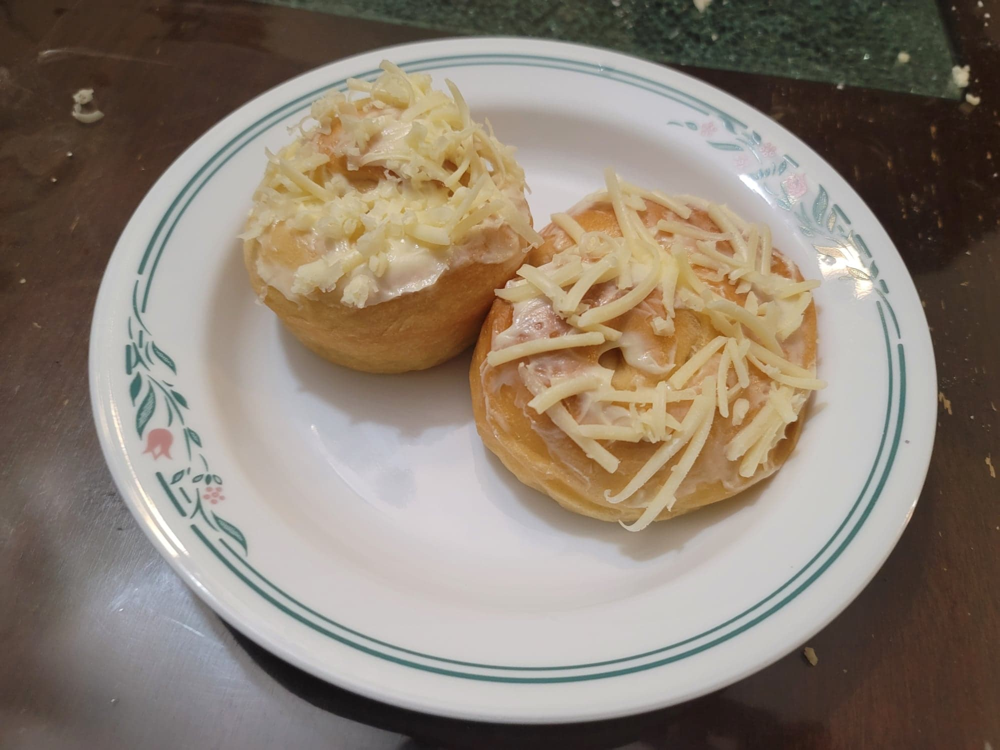

Ensaymadas

Ingredients:
Ensaymadas:
- 440 g Flour
- 1/4 oz Active dry yeast, proofed in 1/4 cup Warm water
- 1 cup (245 ml) Milk
- 1/2 cup Shortening, room temperature
- 1/3 cup (100 g) Sugar
- 3 Egg yolks
- 3/4 tsp Salt
- 1/2 cup Butter, room temperature
Toppings:
- 1/2 cup Butter, room temperature
- 1/2 cup (60 g) Powdered sugar
- White cheddar cheese, grated, to taste
Instructions:
- Combine the warm water and yeast and let bloom for 10 minutes.
- Combine the milk, shortening, sugar, and salt into a large mixing bowl and mix with an electric mixer.
- Then add in roughly half of the flour and the bloomed yeast. Beat with the mixer for about 3-5 minutes on medium speed or until it is a mostly smooth paste.
- Add in the egg yolks and the rest of the flour and begin to knead with your hands. Knead until smooth and not too sticky.
- Transfer the dough to a sealable container and pull the sides of the dough while folding the dough into the middle of the container. Seal and let rise for 2-3 hours, or until doubled.
- Transfer the dough to a flat working surface and roll it into a log. Then divide the dough evenly into 16 pieces.
- Lightly flour the workspace and a rolling pin. Take a piece of dough and flatten it with the rolling pin into a 8x4 inch rectangular sheet. Brush the rectangle with softened butter. Then roll up the dough sheet lengthwise inwards so that it becomes a long, thin log. Then coil the log into itself, tucking the outer end under itself. Place the coil onto a baking sheet or into an ensaymada mold. Repeat with all the dough pieces.
- Let the dough coils rest in a warm place for 30-60 minutes, or until doubled in size. Meanwhile, preheat the oven to 300 degrees Fahrenheit.
- Bake in the oven for 20-25 minutes. Melt any remaining softened butter from brushing the insides of the ensaymadas. When done baking, remove from the oven and immediately brush with butter. Let cool for a few minutes before removing from any mold to cool completely.
- To make the buttercream topping, whip together the butter and powdered sugar with an electric hand mixer until light and fluffy. Slather the buttercream over the tops of the ensaymadas and top generously with cheese. Serve immediately.